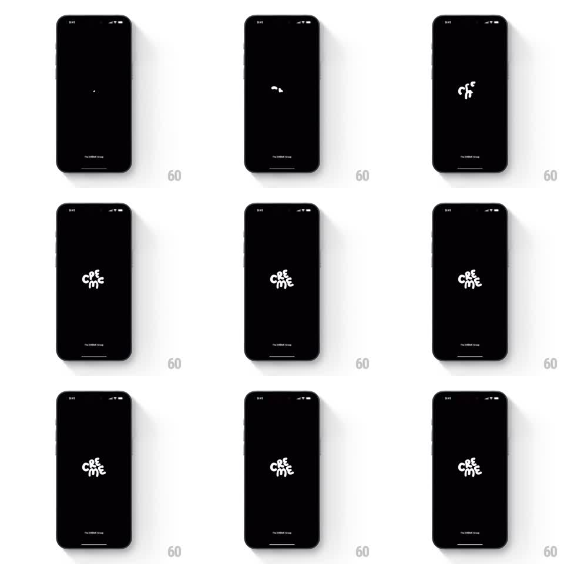

Media
Frame-by-frame

Rebuild this animation 1:1: Creme's splash - on black, a small white blob grows and wiggles, stretching and squashing until it resolves into the bubbly hand-drawn "creme" wordmark, with a tiny "The CREME Group" credit pinned at the bottom.

Rebuild this animation 1:1: Creme's splash - on black, a small white blob grows and wiggles, stretching and squashing until it resolves into the bubbly hand-drawn "creme" wordmark, with a tiny "The CREME Group" credit pinned at the bottom. ## Integration Integration: stack-agnostic spec - springs given as stiffness/damping, timed motions as duration + curve; map every value to your framework and animation library of choice. ## Scene Pure black screen. Center stage: a white amorphous blob that morphs into the stacked bubbly lowercase wordmark "creme" (letters stacked cre / me, rounded inflated strokes). Bottom center, tiny gray credit text "The CREME Group" throughout. ## Motion spec Pattern: blob morph into a bubbly wordmark. - A dot appears at center and inflates into a blob (~300ms, ease-out). - The blob wiggles: continuous squash-and-stretch (scaleX/scaleY oscillating +-10% out of phase, ~500ms cycle) while slowly growing and hinting at letter lobes. - Letterforms emerge: the blob's lobes separate and round into the stacked letters over ~600ms - the shape never cuts, it extrudes; a gentle overshoot (spring stiffness ~260, damping ~14) settles each letter. - Final wordmark holds with a very soft breathing (scale +-1.5%, 2.5s), then the splash transitions on. ## Calibration - Squash-and-stretch must conserve volume (wider means shorter) - that is what makes it feel like a physical blob instead of a scaling image. - Total intro under 2 seconds; the wordmark needs the hold time. ## Reduced motion The wordmark fades in fully formed over 300ms. ## Don't miss - The wordmark is two stacked rows (cre over me), not one line - the stacking is the logo. - Everything is white on black; the gray credit line is the only third tone and it never animates.